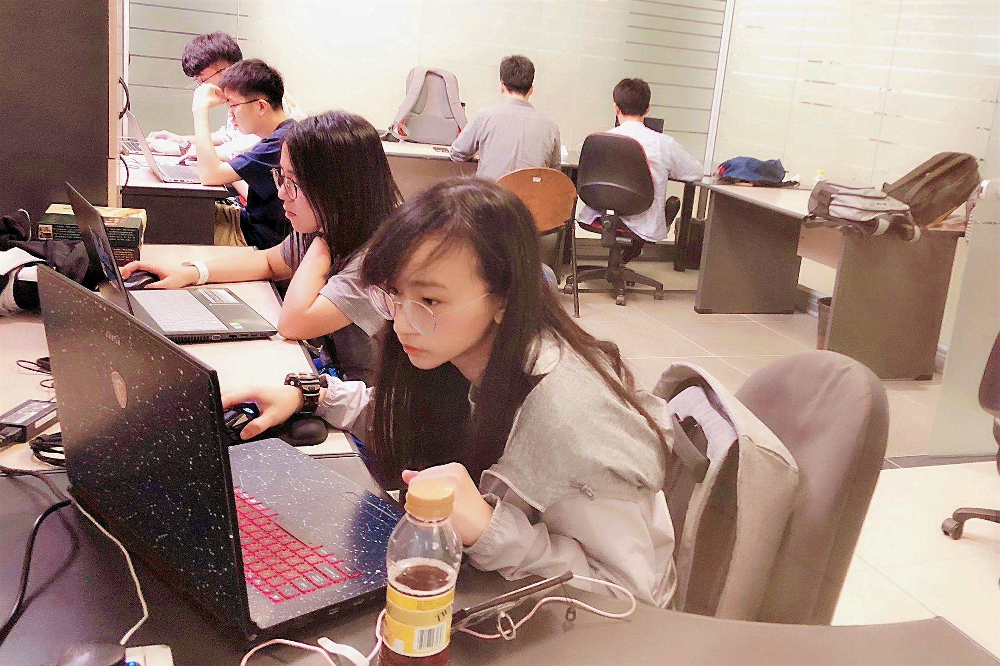
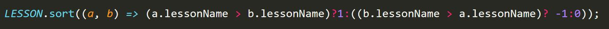
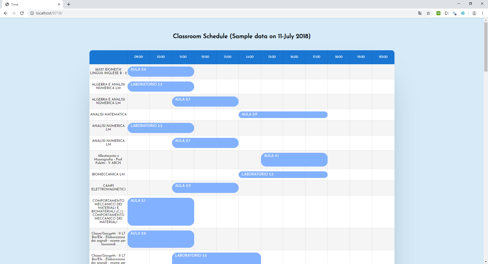
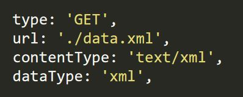
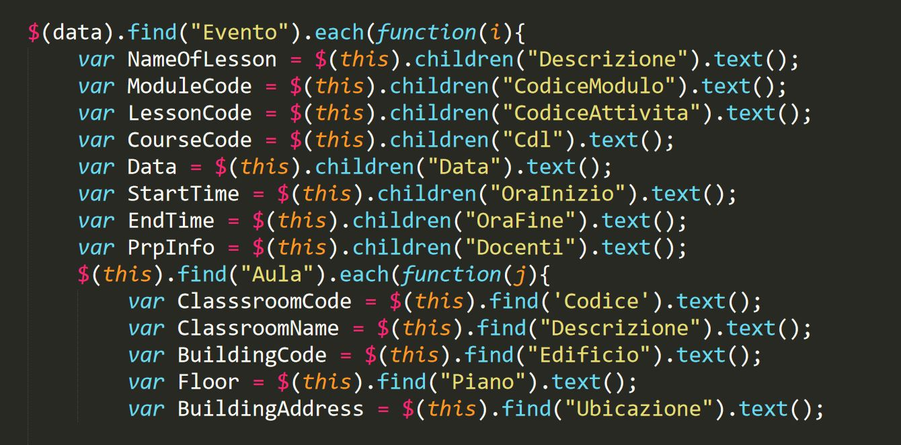
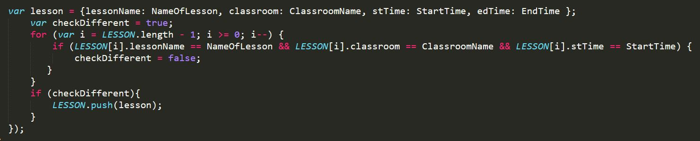
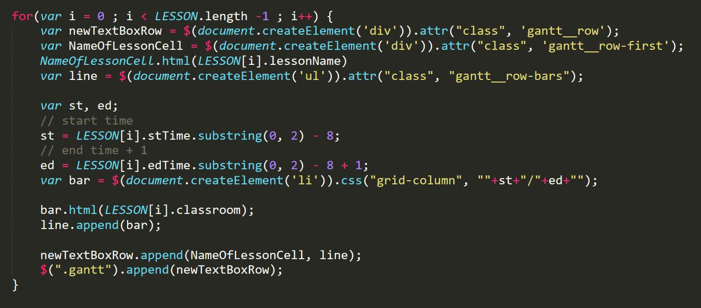

Classroom Schedule
Advisors
Prof. Giovanni Pau, Prof. Rita Tse, Dr, Silvia Mirri, Dr. Catia Prandi, Ms. Chiara Ceccarini, Mr. Lorenzo Monti
Members
Ka Ian Chan, Alice Chong
Prof. Giovanni Pau, Prof. Rita Tse, Dr, Silvia Mirri, Dr. Catia Prandi, Ms. Chiara Ceccarini, Mr. Lorenzo Monti
Ka Ian Chan, Alice Chong
Creating imageries to present data is one of the effective way to transmit information. This kind of visual aids can let receivers understand the information quickly. It is widely used in various disciplines, such as maps, statistics diagrams and trend charts.
An idea of this project is to build up a webpage to display the lectures and related classrooms in a timetable format. There are different kinds of existing libraries to establish the diagrams, such as D3.js and Chart.js, and both of them can also be used to visualize data. However, we did not use any one of them to finish this visualization demo as we would like to design a diagram with our own ideas which can let users have a nice browsing experience.
In this project, we built up a schedule page in a timetable format. The presented data is provided by the University of Bologna which includes the lectures, classroom and time information of a day. By fetching the data from the provided XML file, we can display it within our designed UI interface. As our goal is to let users notice the target lessons and related information clearly with a nice browsing experience, we paid more attention on the visual effects. We mainly chose to use fresh colour, rounded corners and one of the famous graceful font. This kind of design can let users feel more comfortable.
This chapter is going to provide details on the building process, analysis and design.
Because of the Cross-Origin Resource Sharing policy (CORS), we must establish a localhost server. We chose to use a famous localhost server – XAMPP to start the Apache HTTP server to finish this project.
The data is shown in a table format which the horizontal side is a timeline and the vertical side is names of the lessons. For the timeline, it was set from 09:00 to 20:00 according to the opening hour of the campus. In our opinion, it is not necessary to display all 24 hours on the page as it may affect the experience of visualizing and contain some redundant areas. For the names of the lessons, they are sorted by English alphabets which is better for users to notice their target information on the table.
 Figure 1 Sorting DataAs we are students, we know that we are familiar with the lessons (or courses) which we attend rather than which classrooms we are going to use. Since then, we designed the interface with the names of the lessons on the vertical side and the timeline on the horizontal side.
Here is the UI interface of our webpage.
 Figure 2 UI interfaceExtensible Makeup Language (XML) is a textual data format which is widely used for representing data structure. In this project, we were provided the data with XML format. We used AJAX to load the data XML file and some methods to get the data. Including find() method to returns descendant elements and children() method returns all direct children of the selected element.
 Figure 3 Loading the XML file  Figure 4 Fetching DataAfter using the methods to select elements, we use for-loop to traverse the data one by one. It is used to create tag elements and show the data in the corresponding position. To avoid displaying the same data more than once, we have checked the data during the conversation. An array list is created to store the distinct data. Once when the name of the lesson, classroom and start time have already existed, that data will not push in the array list. Thus, we can guarantee the data will only appear once even if it existed in the XML for many times.
 Figure 5 Checking Repeated DataBar lines are used to show the duration of the lessons. Two variables are used to indicate the starting point and the ending point of it. In the XML file, the time is stored as a digital 24-hour clock format, which is containing a colon (:), so it cannot be used to do the calculation directly. Hence, we used the substring() method to extract the useful part and transform it as suitable data to generate the bar line.
 Figure 6 Traversing Data and Calculating the Bar LineIn this project, the outcome of this project is shown. We have already finished a demo of visualizing the necessary data in the schedule table and provided a nice UI interface to present the data. It is clear enough for users to notice the information.
On this webpage, the basic functions are completed.
The conclusion of our work will be shown here. As this is a short-term project which is not contained many functions, the further extension plan will also be discussed in this chapter.
This project aims to apply visualization into presenting data. We established a webpage for visualizing lessons and classrooms schedule. All lessons are sorted by their names and this design is useful for users to check information from the table. Meanwhile, it contains bar lines to illustrate the time duration instead of the digital time format. The interrelated name of the classrooms, including the types, are shown on the bar lines. It is more convenient to let users realize the information. The basic functions of the webpage are done, such as getting data from an XML file, filtering the redundant data, sorting and displaying them in the right position.
Since we only finish a demo in this project, the visualized data is based on a specific XML file and built within the localhost server, for the future extension, we would like to support date selection to check the information in various date. Besides, we also want to provide some common categories for filtering data displaying on the webpage. It should be more user-friendly for every user. In addition, in recent years, many websites or applications provide the customizing colour interface and night sight mode. We prefer to install these function into this webpage.
In this period, we went forward in various ways on data visualization. No matter the studied areas are applied in our project or not, it is still a good experience of exploring new knowledge. Knowing how to learn by ourselves and how to practice knowledge. In the very beginning, we would like to use Python Django framework to build up the visualization project. Because of the low popularizing rate of it, we changed our ideas into JavaScript and its library jQuery. We also did some researches on the libraries D3.js and Chart.js which are famous on data visualization. However, since we did not have enough experiences on JavaScript , the process did not go smoothly. We met different kinds of problems, encoding errors and so on. Especially on fetching XML data, we got into the CORS issues. It could not be solved by using the suggested ways online and wasted plenty of time on it. Fortunately, after our persevere and work hard, we solved all the problems again and again. Eventually, we can output the demo schedule table under our control. After the duration of completing this project, we are more familiar with JavaScript and its libraries and strengthen our programming concepts.